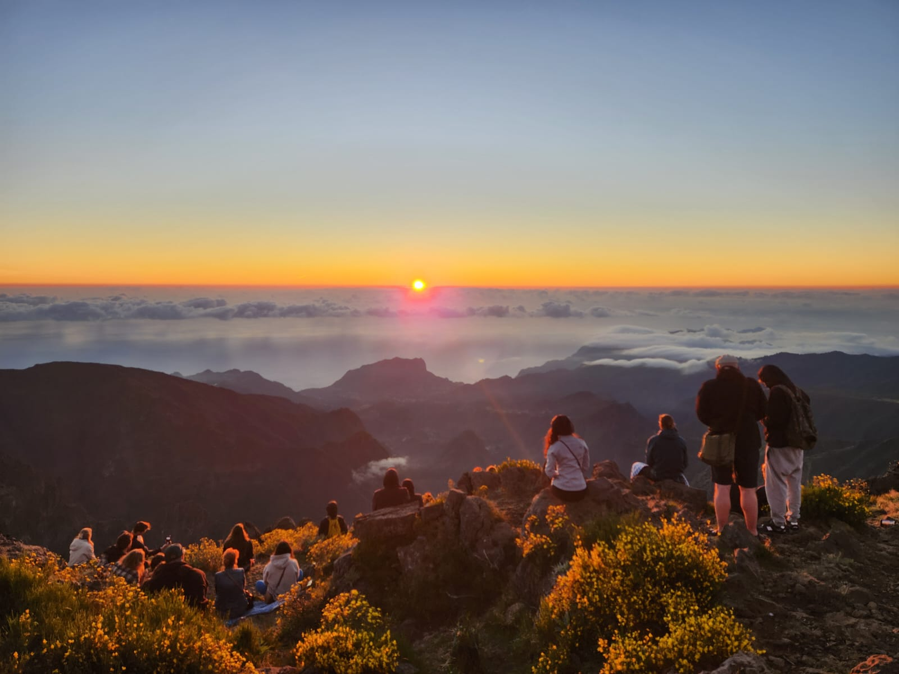
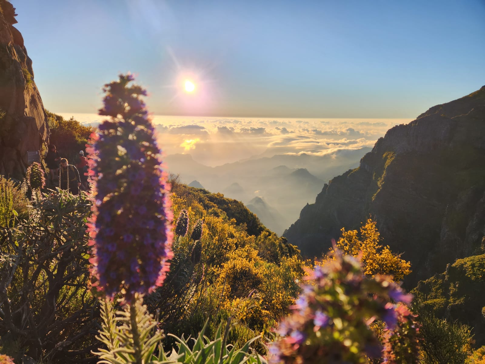
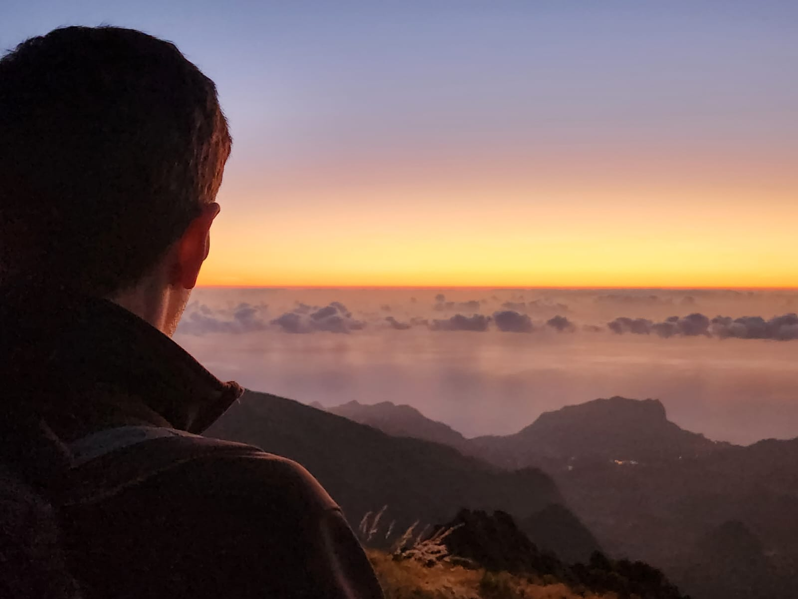
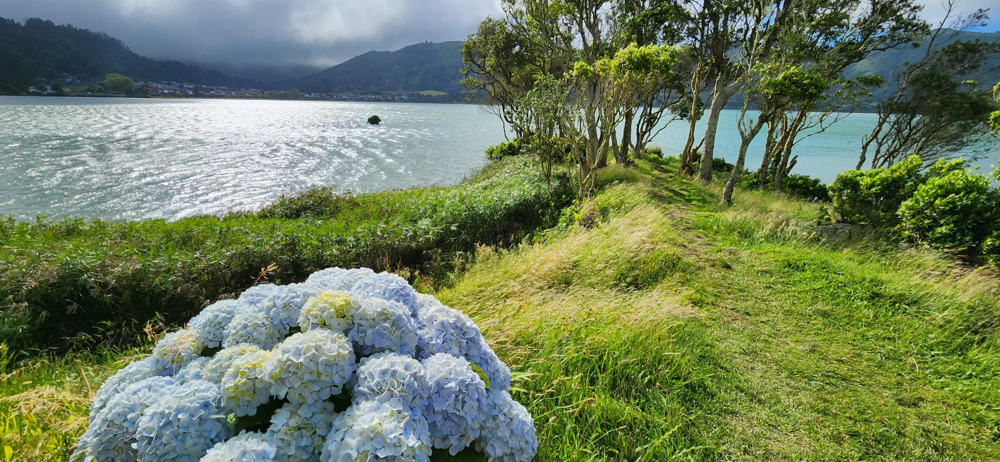
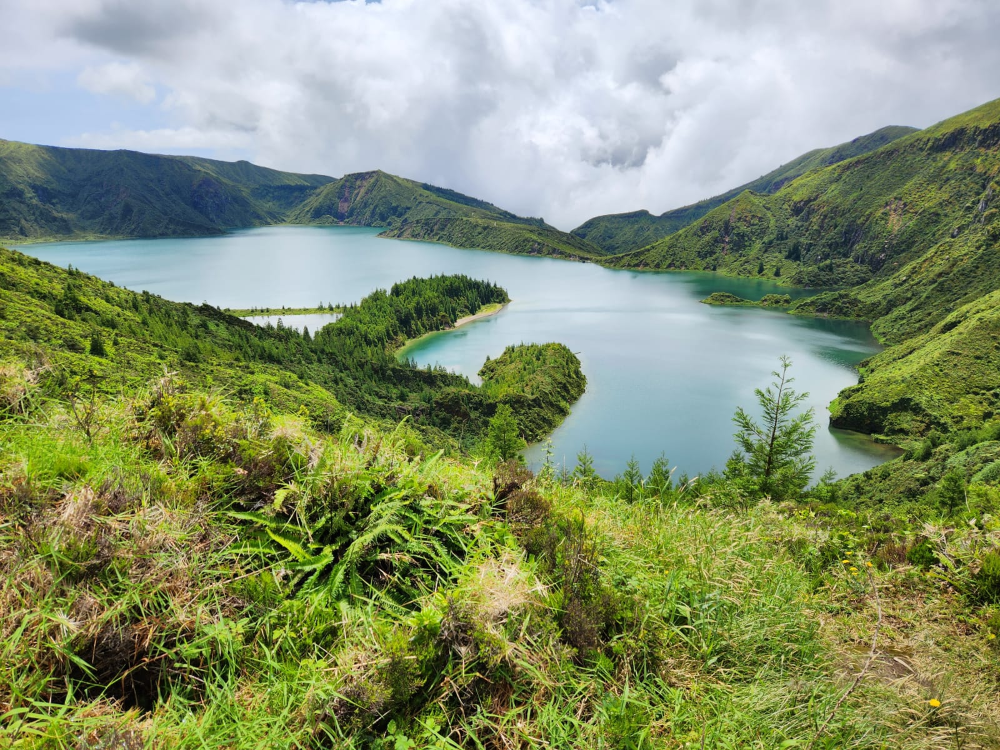

The Trip
Last June, my partner and I went on a very special holiday. It was probably the most exciting holiday we've ever had. We spent a few days in the island of Madeira, then traveled to São Miguel, and finally to Lisbon for the last couple of nights.
Madeira
Our first stop was Funchal, Madeira's capital. It's a small island, so the capital is just a little town, and to be honest, although pleasant, other parts of the island are so much more interesting. One of the highlights of Madeira is its mountains and amazing views of the Atlantic ocean, sometimes from cliffs hundreds of meters above. When visiting a small island, you don't typically expect to climb that far up. But Madeira is full of surprises. In the middle of the island, there are two famous mountain peaks: Pico Ruivo and Pico do Arieiro. One early morning, we drove up to the top of Pico do Arieiro, first to watch the sun rise alongside many others, most of them younger than us. This is what it looked like:
  Not bad, huh? But that was only the beginning. Then we started our hike towards Pico Ruivo. It was not easy, but it was totally worth it and the views are just stunning.
São Miguel
Our next stop was São Miguel, the largest of the Azores islands. It was actually our second time there - our first was maybe ten years ago - and the fact that we went for a second time can hint at how much we loved it. We don't revisit places often. The landscape is beautiful and very green, but less dramatic and more relaxing than that of Madeira. Here are a couple of photos taken on the island:
 Lisbon
Finally, we arrived in Lisbon. What a change! After all that nature, hiking and relaxing, the hustle and bustle of Lisbon felt intimidating, at least on the first evening. The city is gorgeous though, and has a lot of history and a vibrant present.
{kind=link}
{kind=link}
{kind=link}
{kind=link}
{kind=link}